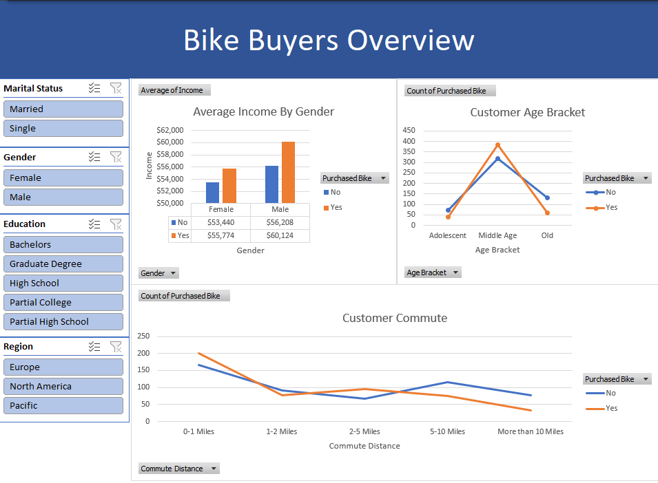

Project Overview
This project uses a customer dataset of 1,000 potential buyers to examine how demographic variables such as age, income, region, and commute distance influence the decision to purchase a bike.
The primary objective is to clean raw customer records, structure demographic age groups using Excel formulas, build summary PivotTables, and design an interactive dashboard with slicers to uncover targeted marketing opportunities.
Data Cleaning & Preparation
- Removed duplicate customer records from the original dataset.
- Standardized Marital Status abbreviations (M to Married, S to Single)
- Standardized Gender values (F to Female, M to Male)
- Created an Age Bracket column using NESTED IF formulas (Adolescent, Middle Age, Old)
- Formatted Income values into clean currency formats for accurate aggregation.
- Structured multi-variable PivotTables for dynamic presentaion of data.
Excel Techniques Used
Several Excel techniques and functions were applied throughout the data cleaning, transformation, and visualization process such as:
- NESTED IF
- PivotTables & PivotCharts
- Interactive Slicers (Region, Education, Marital Status)
- Conditional Formatting
- Data Cleaning & Deduplication
- Currency & Number Formatting
Excel Dashboard
An interactive dashboard was built using PivotCharts and Slicers to allow users to dynamically filter bike purchase rates across regions and customer segments.

Key Insights
- Income Correlation: Across both male and female demographics, customers who purchased a bike had higher average incomes. Female buyers averaged $55,267 compared to $53,450 for non-buyers, while male buyers averaged $59,603 compared to $56,520.
- Age Demographic: The Middle Age group (31–54 years old) represents the primary target audience, accounting for 393 purchases out of 495 total bike buyers. Conversely, conversion was significantly lower in the Adolescent (<31) and Old (55+) age groups.
- Commute Distance Impact: Customers with short commute distances of 0–1 miles showed the highest purchase conversion (207 buyers vs. 171 non-buyers). Purchase rate significantly declined for customers commuting 10+ miles.
- Regional Breakdown: The Pacific region recorded the highest overall purchase conversion rate (~58.9%), whereas North America had the largest volume of non-buyers (288 non-buyers vs. 220 buyers).
- Marital Status: Single customers demonstrated a higher purchase conversion rate (259 buyers out of 477) compared to married customers (236 buyers out of 549).
Project Files
View complete project files on GitHub
- Raw Excel Dataset | Cleaned Working sheet
- PivotTables Sheet | Interactive Excel Dashboard
← Back to Portfolio